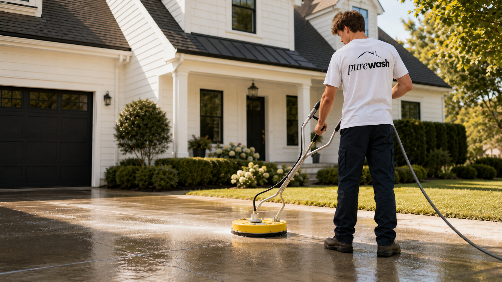

Soft washing for siding, trim, and exterior surfaces — using a nontoxic formula that's safe for your kids, your pets, and your landscaping.

Most home exteriors — vinyl siding, Hardiplank, stucco, painted wood, brick — aren't designed to handle high-pressure water. Forcing high-pressure water against these surfaces can push moisture behind the siding, damage paint, strip caulking, and create conditions for mold to grow inside your walls.
Soft washing uses low pressure and a cleaning solution to do the work that pressure alone can't do safely. Our hydrogen peroxide-based formula penetrates and breaks down algae, mildew, and organic staining at the source. The result is a deeper clean that lasts longer — and no risk of surface damage.
Our hydrogen peroxide-based cleaning solution doesn't just clean the surface — it kills algae, mildew, and bacteria at the root. That means your home stays cleaner longer between washes. And because hydrogen peroxide breaks down naturally, there's no chemical residue left behind on your siding, your deck, or in your garden.
No chlorine. No bleach smell. No worry.
Most residential house washes take 2 to 4 hours, depending on the size of the home and how much buildup is present. We'll give you a time estimate before we start. You don't need to be home — just make sure we have access to an outdoor water spigot.
"Greg at Purewash did a fantastic job on our 3,200 sq ft home — quick, thorough, and great attention to detail. He even came back to touch up a few spots."
— Tami Polak, Franklin TN, 5 stars
Get a free quote today. Fast response, honest pricing, nontoxic cleaning from a local team you can trust.